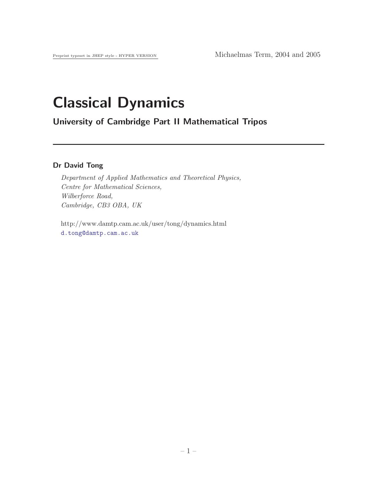

Classical Dynamics
David Tong

1. Newton's Laws of Motion
1.1 Introduction
1.2 Newtonian Mechanics: A Single Particle
1.2.1 Angular Momentum
1.2.2 Conservation Laws
1.2.3 Energy
1.2.4 Examples
1.3 Newtonian Mechanics: Many Particles
1.3.1 Momentum Revisited
1.3.2 Energy Revisited
1.3.3 An Example
2. The Lagrangian Formalism
2.1 The Principle of Least Action
2.2 Changing Coordinate Systems
2.2.1 Example: Rotating Coordinate Systems
2.2.2 Example: Hyperbolic Coordinates
2.3 Constraints and Generalized Coordinates
2.3.1 Holonomic Constraints
2.3.2 Non-Holonomic Constraints
2.3.3 Summary
2.3.4 Joseph-Louis Lagrange (1736-1813)
2.4 Noether's Theorem and Symmetries
2.4.1 Noether's Theorem
2.5 Applications
2.5.1 Bead on a Rotating Hoop
2.5.2 Double Pendulum
2.5.3 Spherical Pendulum
2.5.4 Two Body Problem
2.5.5 Restricted Three Body Problem
2.5.6 Purely Kinetic Lagrangians
2.5.7 Particles in Electromagnetic Fields
2.6 Small Oscillations and Stability
2.6.1 Example: The Double Pendulum
2.6.2 Example: The Linear Triatomic Molecule
3. The Motion of Rigid Bodies
3.1 Kinematics
3.1.1 Angular Velocity
3.1.2 Path Ordered Exponentials
3.2 The Inertia Tensor
3.2.1 Parallel Axis Theorem
3.2.2 Angular Momentum
3.3 Euler's Equations
3.3.1 Euler's Equations
3.4 Free Tops
3.4.1 The Symmetric Top
3.4.2 Example: The Earth's Wobble
3.4.3 The Asymmetric Top: Stability
3.4.4 The Asymmetric Top: Poinsot Construction
3.5 Euler's Angles
3.5.1 Leonhard Euler (1707-1783)
3.5.2 Angular Velocity
3.5.3 The Free Symmetric Top Revisited
3.6 The Heavy Symmetric Top
3.6.1 Letting the Top Go
3.6.2 Uniform Precession
3.6.3 The Sleeping Top
3.6.4 The Precession of the Equinox
3.7 The Motion of Deformable Bodies
3.7.1 Kinematics
3.7.2 Dynamics
4. The Hamiltonian Formalism
4.1 Hamilton's Equations
4.1.1 The Legendre Transform
4.1.2 Hamilton's Equations
4.1.3 Examples
4.1.4 Some Conservation Laws
4.1.5 The Principle of Least Action
4.1.6 What's Your Name, Man? William Rowan Hamilton (1805-1865)
4.2 Liouville's Theorem
4.2.1 Liouville's Equation
4.2.2 Time Independent Distributions
4.2.3 Poincaré Recurrence Theorem
4.3 Poisson Brackets
4.3.1 An Example: Angular Momentum and Runge-Lenz
4.3.2 An Example: Magnetic Monopoles
4.3.3 An Example: The Motion of Vortices
4.4 Canonical Transformations
4.4.1 Infinitesimal Canonical Transformations
4.4.2 Noether's Theorem Revisited
4.4.3 Generating Functions
4.5 Action-Angle Variables
4.5.1 The Simple Harmonic Oscillator
4.5.2 Integrable Systems
4.5.3 Action-Angle Variables for 1d Systems
4.5.4 Action-Angle Variables for the Kepler Problem
4.6 Adiabatic Invariants
4.6.1 Adiabatic Invariants and Liouville's Theorem
4.6.2 An Application: A Particle in a Magnetic Field
4.6.3 Hannay's Angle
4.7 The Hamilton-Jacobi Equation
4.7.1 Action and Angles from Hamilton-Jacobi
4.8 Quantum Mechanics
4.8.1 Hamilton, Jacobi, Schrödinger and Feynman
4.8.2 Nambu Brackets
Back to Home